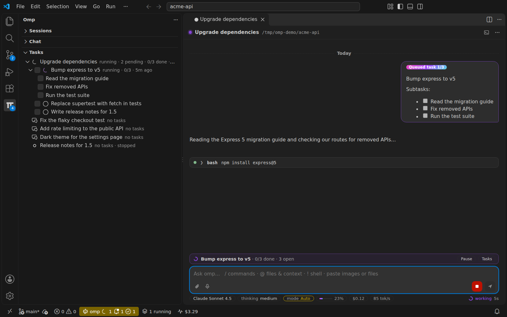
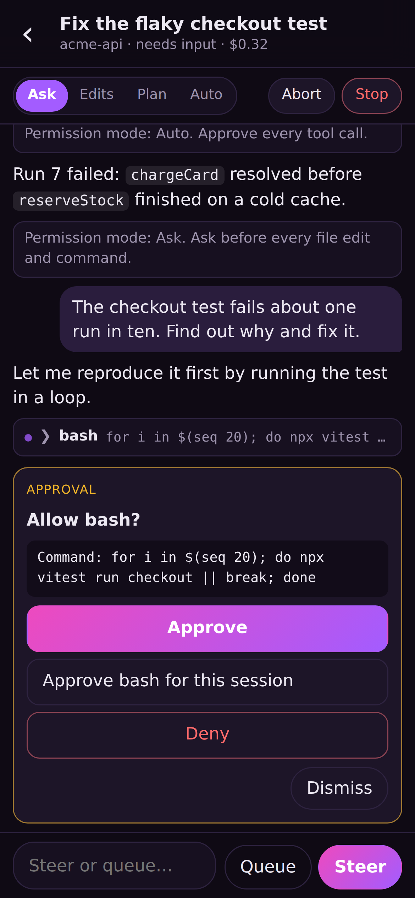
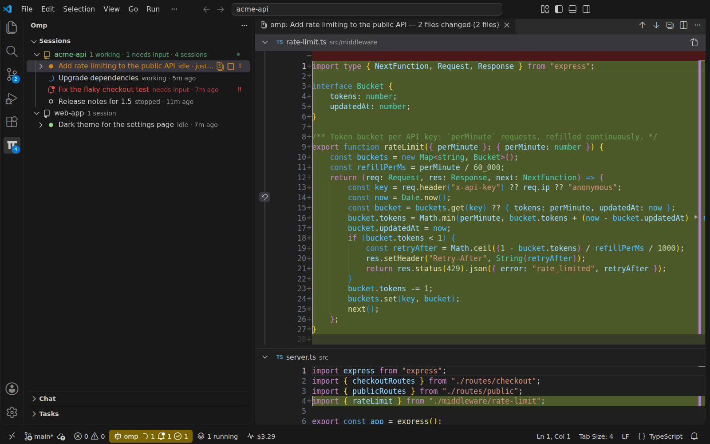

1
09:00 · at your desk

Queue the day
Tasks with subtasks across two repos. Two run at a time; the rest wait their turn.
2
09:30 · laptop closed
Upgrade deps2/3
Flaky testneeds you
Rate limitingdone
Walk away
Close VS Code, sleep the laptop, lose SSH. The sessions keep going on the machine.
3
12:40 · on your phone

Approve on the go
A session asks to run a command: approve it, switch it to Edits, or start a new one.
4
15:00 · back in VS Code

Review and undo
Every change in VS Code's diff. Don't like a turn? Undo it: files and chat go back.
5
18:00 · wrap up

Know the cost
Spend per day, project, model and session; search every transcript.